Introduction
For the last couple of months, we have been working on building an open-source terminal-first AI IDE, Forge. It is built for Vim/terminal power users, who want to do AI-assisted programming without doing context switches. The idea of Forge is to bring the software from idea to production, without leaving the terminal workspace. Think of Forge as a mix of Vim + Claude Code + terminal + Git, all running from your terminal.
A core part of Forge is its AI-assisted coding harness, which takes the user's natural language prompt to research, design and build the software. In its first version, the OpenCode Go subscription's weekly limit would hardly last a single day for coding, even with careful use of models. For a self-funded project, this put pressure on the budget and threatened sustained product use.
OpenCode Go accounts for usage in dollar terms, and cached input can cost less than uncached input, usually by an order of magnitude. This made prompt caching a promising way to stretch the available usage.
This article is a deep dive into how prompt caching was implemented and tested in Forge to achieve 99%+ cache hit ratio.
Why Prompt Caching
Coding requests often repeat instructions and context from earlier requests. Reprocessing the shared context consumes avoidable costs and time. During inference, a model processes the input and creates intermediate key-value (KV) states, and then generates one token at a time. With prompt caching, a provider can retain eligible KV states for the prompt prefix, and later reuse them if a new request starts with the same prefix. Cache eligibility and reuse depend on the provider's caching strategy. A coding harness can improve the chance of reuse by ordering request content so that stable instructions and context come before content that changes between requests.
In 2026, the top coding harnesses average around 90% for their cache-hit ratios. For Forge we set an internal target of 95% cache-hit ratio.
How Forge Constructs Requests
In order to keep the prefix stable, Forge keeps the static content at the beginning and dynamic content at the end of the request.
Forge's request path has two layers.
- A canonical message: Forge's
ModelRequestobject, which is provider agnostic. - A provider-specific wire request:
ModelRequestobject is formatted as per specific provider API before making the network request.


In order to create the canonical message, Forge:
- Starts by creating the system message: It contains system prompt, workspace's
AGENTS.md, and discovered Skills. Before being added to the system message, Skills are sorted by name, and the session's scratch directory is inserted in the system prompt. - Keeps the system message in conversation history. On resumption of a prior session, Forge replays the journal, and uses the stored system message. This ensures that the cache is not invalidated on the resumption of an old session with a different system message.
- Appends the user message, assistant replies and tool results to the end of the message.
- Before each Model step, it repairs and compacts the history, if required. Compaction rewrites the context, and starts a new cache epoch, because the old prefix no longer describes the prompt.
- Finally creates a
ModelRequest. This bundles the transcript, selected tools and model, workspace root, route and session IDs, reasoning settings, andprompt_cache: true.
Once the canonical message is ready, Forge converts it into a provider-specific wire request.
- Anthropic: It places cache markers at useful boundaries. Forge marks the last system block, the last tool definition, and current conversation tail. As the conversation grows, the conversation marker moves to the new tail; the system and tool markers remain at their ends.
- OpenAI-compatible APIs: It sends the conversation as messages containing system, user, assistant replies and tools in order. Forge converts each tool into function schemas, and adds a workspace-derived
prompt_cache_key
How Forge Keeps the Prefix Stable
To keep the prefix stable, Forge implements:
- Intact prior history: New user turns and tool results extend the transcript, preserving earlier messages.
- Sorted variable lists: Tool names and Skills are sorted to prevent incidental map or filesystem order from changing the prompt.
- Frozen content: Image snapshots and frozen tool outputs prevent later file changes from altering old transcript entries.
- Preserved system instructions: The journaled system message is kept rather than regenerated from whatever instructions happen to exist now.
- Cache routing: Forge hashes the workspace path into
prompt_cache_key, which helps the provider caching algorithm with routing affinity across all the sessions of the same workspace.
How We Measured Cache Hits
For each model response, Forge reads the provider-reported cached-input token count and normalises it.
- Anthropic: Reports
cache_read_input_tokens - OpenAI-compatible APIs: Provides
cached_tokensin token-details fields.
Forge adds the cached and uncached input tokens across the model calls. It normalises total prompt tokens across providers, since Anthropic reports uncached input separately while OpenAI includes cached tokens in its total.
How We Evaluated Prompt Caching
We tested Forge's cache-aware request flow, with the DeepSeek V4.1 Flash, OpenCode Go subscription. The evaluation used snapshot of tool calls, repository content and system instructions. We used three different use cases to cover different scenarios.
- The conversation grows: We start with the same system message. Each following request adds the same user message, assistant reply, and tool result. This measures cache reuse as the conversation gets longer.
- Only the ending changes: We keep the beginning of each request identical and change only the final user message or tool result. This measures whether Forge can reuse the earlier part when recent context changes.
- An early instruction change: We change one line in the workspace instructions, then send the same later conversation and tool results. This measures where reuse stops when an early part of the prompt changes. We then repeat the changed request to measure reuse of the new prefix.
For each use case we ran the evaluation 10 times.
Results and Findings
The mean, minimum, maximum, and standard deviation are calculated across 10 cache-aware runs per use case. The token-weighted ratio is calculated as total cache-read tokens divided by total input tokens.
| Use case | Runs | Mean hit ratio | Min | Max | Standard Deviation | Token-weighted hit ratio |
|---|---|---|---|---|---|---|
| Conversation grows | 10 | 99.60% | 99.30% | 99.90% | 0.19 pp | 99.60% |
| Only the ending changes | 10 | 99.48% | 99.10% | 99.86% | 0.24 pp | 99.48% |
| An early instruction changes | 10 | 94.80% | 93.20% | 96.40% | 1.04 pp | 94.80% |
Token totals are summed across the 10 runs for each case. Uncached input is the remainder after cache reads and cache writes are subtracted from total input.
| Use case | Total input tokens | Cache-read tokens | Cache-write tokens | Uncached input tokens |
|---|---|---|---|---|
| Conversation grows | 1,284,763 | 1,279,623 | 2,743 | 2,397 |
| Only the ending changes | 1,115,482 | 1,109,682 | 3,271 | 2,529 |
| An early instruction changes | 963,247 | 913,159 | 17,633 | 32,455 |
- Appending messages or changing only the last message resulted in improved cache-hit ratios, as reflected by 99.60% and 99.48% mean cache-hit ratios for the first two use cases.
- Changing the instruction, which is in the early part of the message, drops the cache hit ratio by ~5 percentage points compared to the other use cases, and ~30k uncached input tokens compared to ~2.5k input tokens of the first two use cases.
- The early change use case varies more (~1 pp standard deviation) between runs compared to the other use cases (~0.2-0.25 pp standard deviation), indicating caching is more sensitive to the early message changes.
Final Notes
Prompt caching is a request-design problem shared by the harness and provider. The harness controls request ordering, history persistence, and cache hints; the provider determines which prefixes it retains and reuses. Tracking usage alongside serialized request snapshots connects cache behavior to the prefix that produced it. The main lesson here is to design request construction and cache observability together while writing an agentic harness.